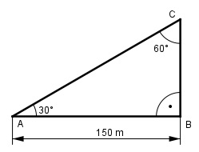

Pythagoras Aufgabe 60 Ein Beobachter sieht aus 150 m Entfernung und unter einem Erhebungswinkel von 30° den Licht- fleck, den ein senkrecht nach oben gerichteter Scheinwerfer an der Wolkenuntergrenze erzeugt. Wie hoch stehen die Wolken in m?

Das Dreieck ist die Hälfte eines gleichseitigen Dreiecks, wegen der Winkel. --> BC = AC/2 Satz von Pythagoras im Dreieck ABC: AC2 = AB2 + BC2 | -BC2 AC AB2 = AC2 - (----)2 2 AC2 1502 = AC2 - ----- |*4 4 4 * 1502 = 4 * AC2 - AC2 4 * 1502 = 3 * AC2 | :3 4 * 1502 AC2 = ---------- = 30 000 m2 |√ 3 AC = 173,2 m BC = AC/2 = 86,6 m